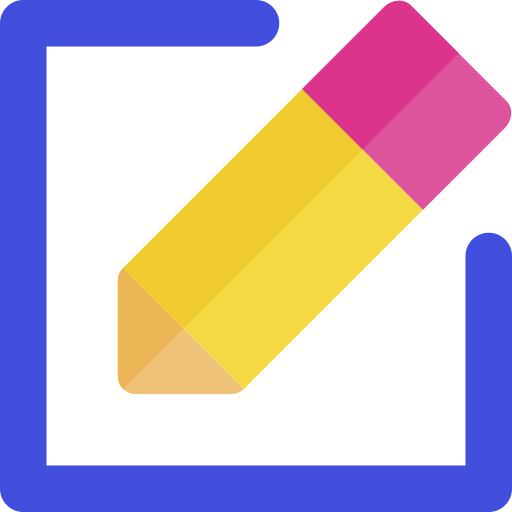

{{convertAnomalyLevel(element.anomaly_level)}}
NESSUNA ANOMALIA RECENTE
TIPO DI ALLERTA NON DISPONIBILE
{{element.alert_name}}
| No. | {{element.id}} | Via | {{element.street}} | Condizione | {{element.condition}} | Allerta |
{{convertAnomalyLevel(element.anomaly_level)}} |
Gestione |
|

|
| Anomalia
|
|
NESSUNA ANOMALIA RECENTE TIPO DI ALLERTA NON DISPONIBILE {{element.alert_name}}
|
|
|
|---|